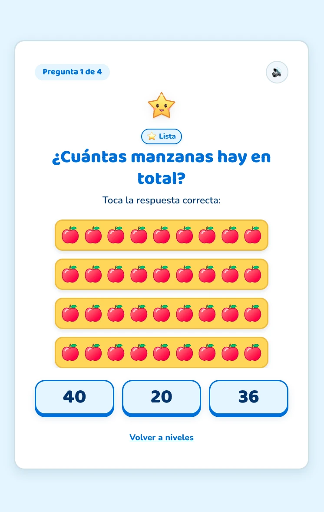
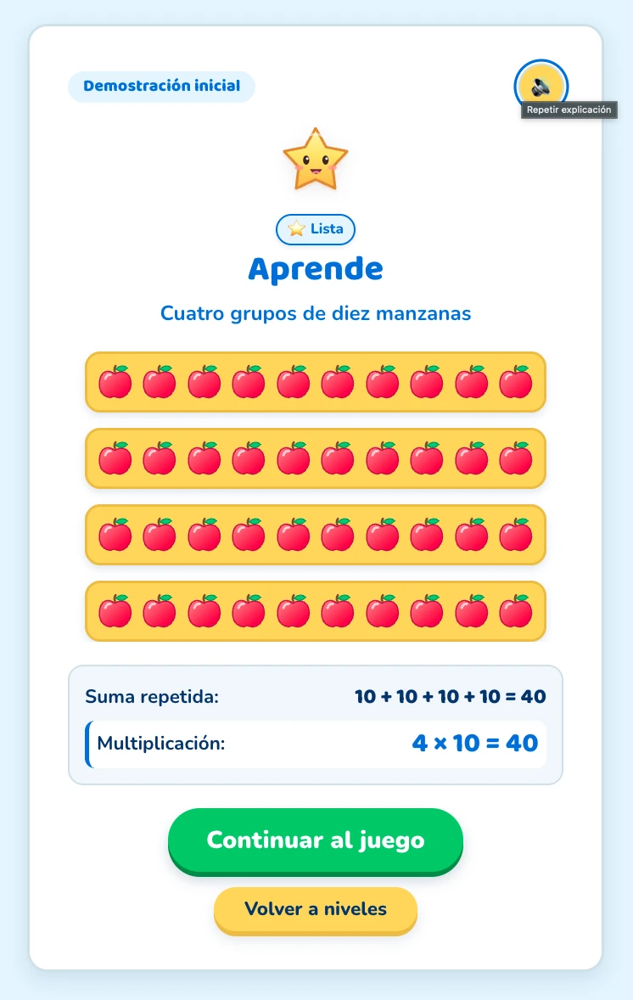
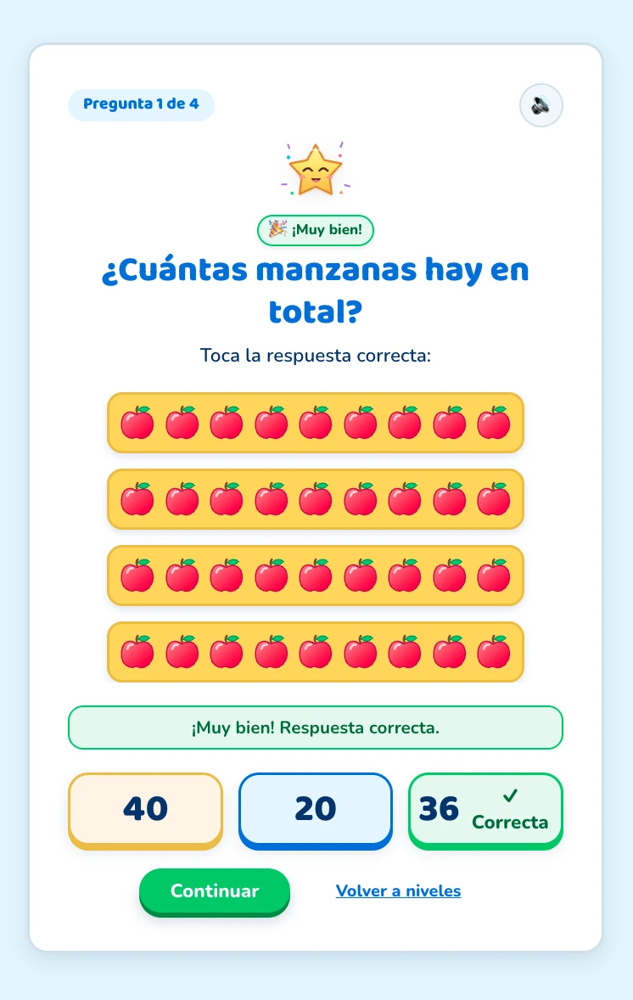
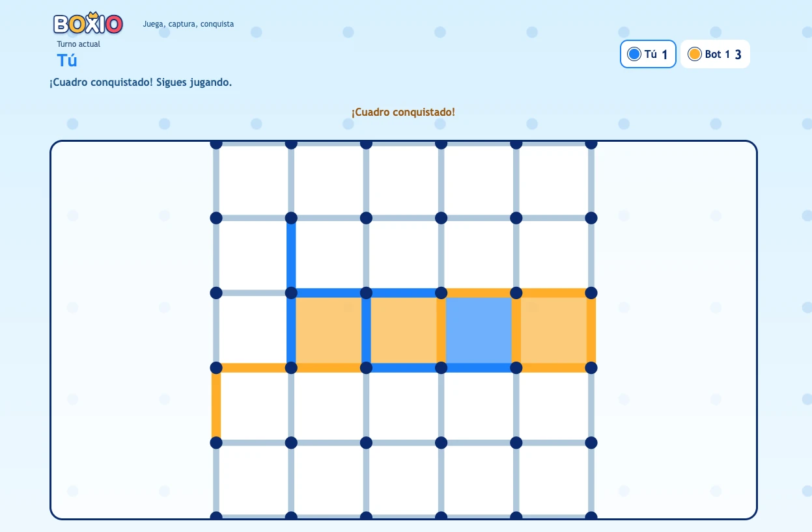
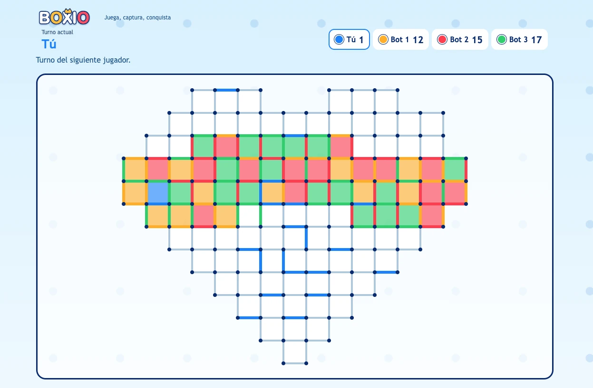

Beastie Studio · composiciones reales
Referencia visual que combina exclusivamente capturas auténticas suministradas por el usuario; los elementos de la interfaz de los juegos no se modifican. El HTML usa archivos del repositorio: no depende de imágenes ficticias.
Juego educativo
Múltiplo
Descubre, aprende y celebra cada logro.



Juego de estrategia
Boxio
Conquista cuadros. Elige tu jugada.

